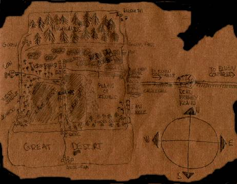
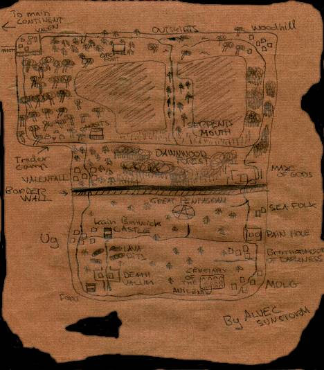

The world in Era Online are quiet huge ! Almost 10,000 screens big !
The world is divided up into about 200 zones and you cross them without
noticing it really. The world currently consist of two continents. But we will
frequentlyexpand the world ! Lets take a look on the main continent (Heedi-Raa)
first.
MAIN CONTINENT (HEEDI-RAA)

This atlas scribed in on a parchament was found during the escavations that was
done in the Great Desert. It is the only atlas found in Menath at this time and no
one know how this old atlas was made or who made it. The map is abit blurry and
many people have tried making copies of it, but if these are accurate we do not
know at this time. The map is handrawn and it is belived to be from the first Era.
Maybe a traveller made it ? Magicians ? We will probably never know.
Here are a list and description of the different places on the map.
If you go from Castlefall and cross the Continental Bridge (Bridge Of Bondage),
you will eventually reach the other continent called The Elven Continent. This
continent is not as well charted but there is a map over it at the bottom of this
section. Here first are a discription of the main continent:
Great Desert
Home of the Haakis. The city Anon-Raa is the southernmost city here, and just
above it lies the village of Denc. There are several dungeons found troughout the
desert but non of them has been charted and no one knows exactly where they
are. Great tresures are found within them we know ! But they are infested with
Mumys, Wraiths, Deamons and more. The desert is a vast, lonely place filled
with cactuses, sand, snakes and more sand. Not a very colorful place ! You can
find quite alot of Desert Trolls here and also some of the dangerous Beholders.
The Highlands
The northern most part of Menath. There is a lare cliff seperating the Highlands
and the middle of the continent. No one can pass this. The only way to get up
into the Highlands is either to go north from Castlefall, or go north from Bern.
Bern is the westernmost city and Castlefall (Menath`s capitol) is the easternmost.
This place is cold and there is a vast amount of huge trees here. The two villages,
Gorth and Hermeth lies on each side of the Highlands, and in between is very
uncharted. We do know that the pesky little Gnomes and the Gnolls possess this
land. Tales and rumors also speaks of giant Snow Yetis ! There is said to be
a dungeon there somewhere.
Plains Of Zeendic
A barren plain of grass. It lies right east of Castlefall and its inhabitants are
mostly snakes, bats and some skeletons. On the westernside of the plains
there are huge grass sticking up in the air. In the south of the plains you can
walk into the Forest Of Griigo.
Forest Of Griigo
A green place indeed. Mostly inhabited by skeletons and there is said to be
an important abadoned temple there somewhere but no one has actually
been there. Nothing much to say about this lonely place.
The Swamps
The Swamps is located right in the middle of the continent, between the
two great lakes. This are is wet and scary and its mostly inhabited by Snakes,
Spiderlings, Skeletons and Serpent Men. There is a dungeon here somewhere
called Angel Cry, and it is belived to lie at the shores of the right lake.
Heedi Raa Forest
This forest is located north of the Plains Of Zeendic and spans from the west
side of the continent, to right east side. Its a vast and dangerous area. Several
bandit camps can be found here also Orc camps. Many lost temples and grave
yards has also been reported here and there is a mixed lot of creatures roaming
this area.
West Jungle
Located south of Bern and west of the left lake. We know that a gypsy community
has settled down here at the shores of the lake. This area is also inhabited by
zombies. The pirate town of Jemhoo also lies here. The West Jungle is a relatively
small place but can be dangerous indeed !
East Jungle
Nothing different that the West Jungle but it is more deserted. We know alot of
trolls hide in these parts but there is no form for settlements, however there is a
litte trading post just before reaching the city of Castlefall which lies north of
the east jungle.
Light Forest
This forest is populated by Air Elementals, Trolls, Orcs, Snakes and other
beasts. Also, you will often meet a deer or two because deers like these parts.
The Light Forest is located east of Bern and north of The West Jungle.
Travellers say there is a temple in the middle of the land and that lately it has
been inhabited by Air Elementals. There is a road going trough the entire forest,
stretching from Bern to Angelmoor, the city in the center of the continent.
The Light Forest has alot of small trees and there are also found some Bard
camps around here.
Continental Bridge (Bridge Of Bondage)
As said, there is a bridge going over the ocean from Castlefall over to the
wood elf city of Valen. You can go over this bridge and enter the Elven Continent.
There is two island on its course. Dead Money Island, a friendly island with a
straned ship on it and the hostile Cyclop island. The Bridge should only be
crossed by experienced people !
THE ELVEN CONTINENT

This piece of parchament was recovered from the former Wood Elf capitol,
which is now called Valenfall. The story behind Valen and Valenfall is simple.
A long time ago, Valenfall was called Valen, and the city which is called Valen
today wasn`t there. There was a huge war between the Dark Elves and the
Wood Elves and losses where heavy. The Wood Elves manage to keep their
control over Valen (Valenfall) butafter the war, the city became half wood elven
and half dark elves. The Wood Elves didn`t like the fact that this was their
capitol so they renamed the city to Valenfall as it is called today. They moved
north and created a new, better fortified city, and they called that city Valen as
its called today. The map seems to have been created by someone named
Alvec Sunstorm. After some research, it was known that he was one of the
most talked about adventurers in his time. Now lets describe this amazing
continent.
The Outskirts
The outskirts lies between Valen and Woodhill. Its infested with the giant
dangerous Cyclopses. It is said that they have a cave there. There isn`t
many trees in this area, cause the cyclopses have taken many down to use
for themselves. For what purpose no one knows. Travellers seeking the easy
way to Woodhill from Valen, should avoid this area !
Serpents Mouth
The Serpents Mouth is located between the two great lakes. This is a swamp
area and are mostly inhabited by snakes and serpent men. Many say that if you
kill a snake in this area, you are most likely to kill one of the Serpents Men
children.
The Dawnwood Forest
This area lies between Valenfall and the Maze Of Gods. Its inhabted by
warewolves, trolls, orcs and various other creatures. You can also find some
huts inhabited by nice people but dont expect them to be found easily !
Maze Of Gods
We know very little about this area. Many travellers find themselves lost in the
maze and many have died there. We strongly encourage anyone to think twice
before entering this maze, cause you are not guaranteed to get out !
Border Wall (Azwus Mentrex*)
This is a great wall that seperates the Wood Elves from the Dark Elves.
There are two possible entrances on each side of the continent but they are
guarded by Dark Elf guards. These guards are known not to be too friendly !
*Aswuz Mentrex means "Dividing The Bloods" in anicent Dark Elf code.
The elder ones still belive that if any dark elf cross over to the wood elves,
their blood will become unclean and they are only half dark elves.
The Great Pentagram
This is a giant pentagram made up by stones. Its located between the two
gates of the Border Wall. Few know what it really is good for but the anicent
books found in Molg says the following:
"...a pentagram of a hard element will rise up during times when the Dark
Elves are supressed. If every Dark Elf in the land thinks about the pentagram
at once, a messias in form of a deamon will rise up and save the people..."
Sea Folk Camp
These are peacful people that have held their camp there for hundreds of years.
They live of the wet element and travel never far from their homestead. Their
camp is located above the Pain Hole.
Pain Hole
In the anicent books found in Molg there is a little thing written about this place:
"...when the god of destruction fell for the god of creation`s hand, he fell to the
ground and made a hole in the ground bigger than a big ship ! This places has
been named Pain Hole for that very reason..."
Pain Hole is located north of Molg.
Cemetary Of The Anicents
What makes it that this cemetary is placed on the map you wonder ? Because it
is of great importance for the Dark Elf people. In the first Era there were a
brotherhood of seven wise Dark Elves and they were all buried in this place along
with their relatives. It lies west for Molg.
Brotherhood Of Darkness
Little do we know about this place. It is the hide out for a religious sect which
called themselves Brotherhood Of Darkness. What other can i say than this
place is boiling with evil !
Death Vacum
This place is located south of the Lava Pits. Its really a maze but it isn`t really
a dangerous place. Mostly inhabited by gnolls and have no large importance.
Lava Pits
The Lava Pits are located north of Death Vacum and south of Kain Benwick`s
castle. This is the home of the deamons. This is where they are born, and this is
where they die. Every single deamon in Menath comes from this place, and dies
in this place.
Kain Benwick`s Castle
This is the home of the Dark Elf leader. This place flows over with Dark Elf
guards, and as all the Dark Elf guards, they will attack all Wood Elves and
Humans on sight ! The castle is located east of Ug.